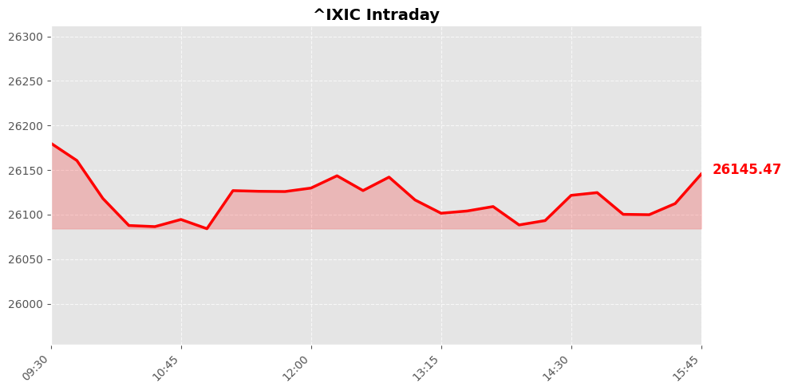
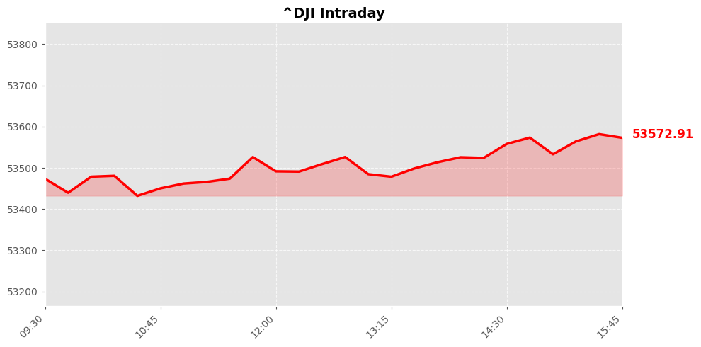
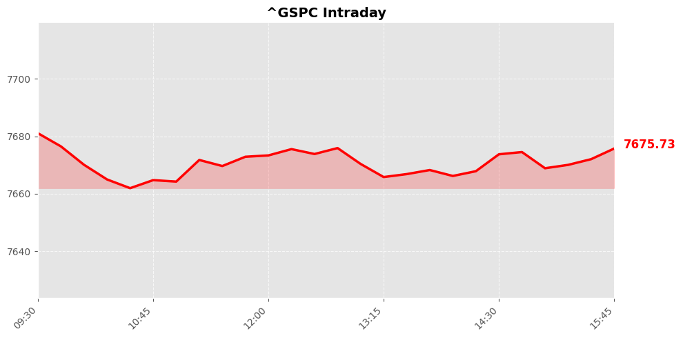

美股市场简报
2026年08月26日 | StockGate 美股通
📊 市场概览



今日美股三大指数集体收涨，呈现稳健上攻态势。纳斯达克指数报收纳斯达克指数至26151.3点，单日累涨+0.66%；道琼斯指数收于道琼斯指数53577.4点，涨幅定格于+0.30%；标普五百指数录得标普500指数7677.28点，温和攀升+0.32%。整体盘面受头部科技企业财报超预期及宏观通胀数据回落双重支撑，风险偏好显著修复，增量资金逐步回流成长型资产，推动大盘有效突破前期震荡箱体。盘中波动率指标同步走低，期权市场看涨合约持仓量明显放大，印证多头情绪稳步累积。
内部结构呈现典型的高低切换特征。半导体与人工智能算力板块强势领涨，公募与外资买盘集中涌入，相关主题ETF单日净流入规模创下近期纪录。相对地，传统能源与大型零售持续承压，部分周期权重股因大宗商品价格走弱遭遇短线获利了结。全市场成交额维持中性偏暖水平，多空博弈高度聚焦于业绩兑现度，机构资金正围绕盈利确定性进行战术调仓。跨资产比价效应显现，美债收益率曲线陡峭化进一步催化权益类资金再平衡，量能配合度保持健康区间。
📰 今日要闻
【要闻焦点】 期权市场出现大规模资金涌入，交易员正押注美债收益率见顶回落，债券熊市可能临近终结。
【投资推演】 利率下行预期将显著降低企业融资成本，对高久期成长股形成利好催化。资金有望从避险资产回流至权益市场，尤其提振纳斯达克指数及科技成长板块的估值修复空间。
【要闻焦点】 OpenAI公开确认自研定制芯片取得重大突破，引发市场对其供应链格局变化的深度讨论。
【投资推演】 自研算力方案落地标志着AI产业链去中心化加速。Broadcom获证实力，但长期看将对英伟达的垄断地位构成份额侵蚀风险。短期建议警惕巨头出货放缓引发的回调压力，关注定制化代工替代逻辑。
【要闻焦点】 加拿大谈判代表在美磋商破裂后明确表态，拟针对特朗普政府的新关税政策实施对等报复措施。
【投资推演】 贸易摩擦升级将直接冲击北美跨境供应链，对汽车制造与大宗商品板块形成利空压制。美股制造业面临关税传导的成本重估，需防范全球贸易规则碎片化带来的盈利下修风险，防御性配置成为优选。
【要闻焦点】 多家顶级投资机构连续两日减持头部人工智能标的，明确以锁定既有利润为首要目标。
【投资推演】 机构获利了结动作释放高位震荡信号，反映市场对AI应用端业绩兑现速度的分歧加剧。短期内板块波动率将放大，追高风险显著上升。策略上应转向具备实际现金流支撑的底层算力基础设施，规避纯概念炒作标的的回撤隐患。
【要闻焦点】 白宫宣布中东战事平息，驻外使馆人员启动返岗程序，且霍尔木兹海峡已完成水雷清除作业。
【投资推演】 地缘政治溢价迅速消退，原油供给中断担忧解除，能源价格迎来企稳反弹契机。航运板块保费回落将大幅改善运价模型，利好跨国物流与出口导向型企业复苏。宏观不确定性下降为风险资产提供喘息窗口。
【要闻焦点】 美国政府发布新一轮经济制裁清单，重点封锁伊朗及其核心贸易伙伴的资金结算与物资通道。
【投资推演】 制裁加码虽强化美元信用，但将扰动新兴市场资本流动。能源巨头在合规审查下的运营成本攀升，对传统能源股构成阶段性承压。然而，合规科技与网络安全需求激增，相关细分赛道呈现结构性超预期增长潜力。
【要闻焦点】 固定收益市场定价机制发生根本性重构，机构投资者正在重新校准对美国财政赤字与通胀路径的预期。
【投资推演】 长端利率中枢上移若成共识，将实质性压缩美联储降息周期的想象空间。无风险利率抬升直接削弱长久期资产的吸引力，迫使权益资金向低估值价值风格切换。高股息策略在利率刚性环境下凸显配置优势。
【要闻焦点】 链上数据平台显示，市场参与者普遍认定国会推进加密货币监管法案的概率极低，立法进程陷入停滞。
【投资推演】 监管真空延续导致行业合规成本居高不下，对数字资产板块形成长期发展制约。缺乏顶层设计护航使得机构资金入场步伐迟疑，板块流动性难以突破瓶颈。投资者需警惕政策反复引发的情绪退潮，控制仓位敞口。
【要闻焦点】 调研指出大量求职者在过往履历中强行植入人工智能技能标签，试图在严峻就业市场中抢占先机。
【投资推演】 劳动力市场疯狂追逐AI人才印证产业渗透率已越过临界点。企业数字化转型投入持续加码，直接拉动云计算与大数据分析服务营收。该趋势为SaaS软件商提供坚实的需求底座，基本面支撑强劲，维持中长期看多评级。
【要闻焦点】 半导体指数集体异动拉升，市场资金密集布局于英伟达财报发布前夕的博弈行情。
【投资推演】 财报季窗口临近，权重股表现将决定大盘方向。若数据中心收入增速维持强劲势头，将彻底打开半导体设备与先进封装产业链的上行天花板。反之则触发技术性抛售。当前盈亏比偏向左侧布局，紧盯指引修正带来的趋势性机会。
📈 宏观经济数据
💰 利率与货币政策
联邦基金利率： 3.6% 0.0个百分点 （前值: 3.6%）
观察日期: 2026-07-01 | 下次公布: 2026-09-16
10年期国债收益率： 4.7% -0.0个百分点 （前值: 4.7%）
观察日期: 2026-08-24 | 下次公布: 2026-08-26
🔥 通胀指标
消费者物价指数(CPI)： 3.3% -0.2个百分点 （前值: 3.5%）
观察日期: 2026-07-01 | 下次公布: 2026-09-11
PCE物价指数： 3.7% -0.4个百分点 （前值: 4.1%）
观察日期: 2026-06-01 | 下次公布: 2026-08-27
核心PCE物价指数： 3.3% -0.1个百分点 （前值: 3.4%）
观察日期: 2026-06-01 | 下次公布: 2026-08-27
生产者物价指数(PPI)： 4.7% -0.9个百分点 （前值: 5.5%）
观察日期: 2026-07-01 | 下次公布: 2026-09-10
👷 就业指标
非农就业人数变化： 158858.0K -23.0K （前值: 158881.0K）
观察日期: 2026-07-01 | 下次公布: 2026-09-04
失业率： 4.1% -0.1个百分点 （前值: 4.2%）
观察日期: 2026-07-01 | 下次公布: 2026-09-04
🛒 消费者指标
零售销售月度变化： -0.6% -0.8个百分点 （前值: 0.2%）
观察日期: 2026-07-01 | 下次公布: 2026-09-16
个人消费支出月度变化： 0.3% -0.6个百分点 （前值: 0.9%）
观察日期: 2026-06-01 | 下次公布: 2026-08-27
🔮 市场展望
隔夜美股三大指数集体收红，市场情绪偏向技术性修复。资金正从纯题材炒作向确定性资产切换，纳斯达克受OpenAI与Broadcom定制芯片订单超预期直接提振，预计明日将延续向上驱动格局。同时，债券期权市场出现巨量多头布局，暗示长端利率见顶，资金回流固收将有效对冲股市抛压。若早盘标普500放量突破前高阻力，大盘有望完成筑底并开启新一轮反弹行情。
【重点风控与关注焦点】
中东使馆人员有序返岗虽释放局部缓和信号，但区域博弈底色未变，需高度警惕突发地缘扰动引发的资金避险性回撤。加密立法年内大概率搁浅，相关概念股缺乏基本面支撑，建议规避高位接盘陷阱。策略上务必严控杠杆，紧密跟踪美债收益率曲线形态对科技估值的压制。一旦指数有效跌破二十日均线，需坚决执行防守纪律，防范宏观流动性收紧带来的趋势性风险。保持战术弹性，等待右侧信号确认。
数据来源：Yahoo Finance / Finnhub / Alpha Vantage / FRED / Reddit
报告生成：2026-08-26 04:53
⚠️ 免责声明：美股市场简报 - 2026年08月26日。StockGate 美股通 - 本报告仅供参考，不构成投资建议。投资有风险，入市需谨慎。
🔥 扫码加入【股神星】专属群 🔥
扫码加入股神星交流群，一起享受财富人生
📱 下载飞书App，扫描二维码入群
获取更多美股投资洞察与实时动态